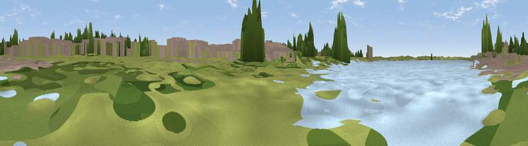

Viewpoint near Crosby
#44408 in England · top 90% of its area beats it · near Crosby · access?Where it is
The exact computed spot (SJ 31836 97426). Click the marker for map links.
Public access: no public right of way or access land is recorded at this exact spot — it may be on private land. Computed from Natural England's CRoW access layer and OpenStreetMap rights of way — not the legal definitive map. Always verify locally.
The view, rendered

A 360° render of this exact spot computed from the terrain model, tree cover and land cover — summer colours, afternoon light, calibrated against photographs of famous viewpoints. Real trees, hedges and buildings will differ in detail.
The panorama
Grey silhouette: terrain skyline in each direction (720 bearings, Earth curvature and refraction included). Dashed green: skyline with trees (+15 m) and buildings (+8 m) as obstacles. Blue strip: how far the ground is visible on each bearing.
Where the view opens
Wedge length = distance to the farthest visible ground on that bearing (vegetation-aware). Rings at 10, 25 and 50 km.
What fills the view
37% grassland · 31% water · 28% built-up · 2% woodland · 1% bare ground
Angular shares of the visible panorama (visual magnitude), not map area. Landscape diversity 0.53 (0–1 Shannon).
Key numbers
More beautiful places nearby
The staircase of upgrades: each row has a higher view potential than everything closer. Driving times are estimates from straight-line distance, calibrated against real road routing — check an actual route before setting out.
| Place | Direction | Drive | Score |
|---|---|---|---|
| Gorse Hill | SSW · 4 km | ~9 min | 56.5 |
| Viewpoint near Wallasey | SSW · 4 km | ~9 min | 59.9 |
| Viewpoint near Bidston | SSW · 8 km | ~17 min | 61.6 |
| Viewpoint near West Kirby | SW · 14 km | ~26 min | 61.8 |
| Thurstaston Hill | SSW · 15 km | ~26 min | 65.1 |
| Viewpoint near Caldy | SW · 15 km | ~27 min | 68.0 |
| Viewpoint near Far Moor | ENE · 21 km | ~35 min | 72.8 |
| Viewpoint near Dalton | ENE · 21 km | ~35 min | 74.2 |
53.46914, -3.02832 · source: osm viewpoint · position refined by local search. Computed location — check access rights before visiting.